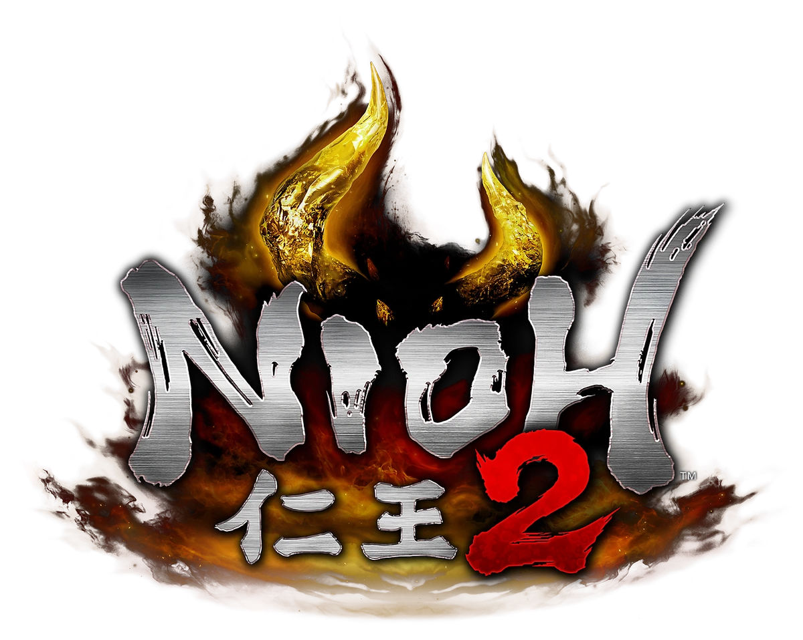
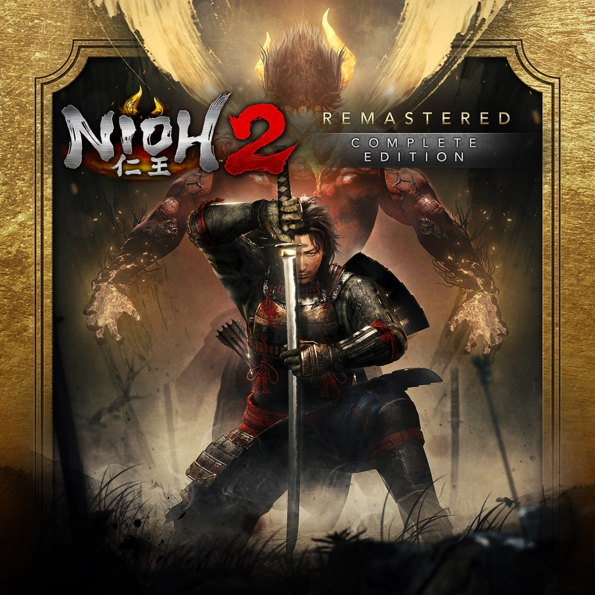
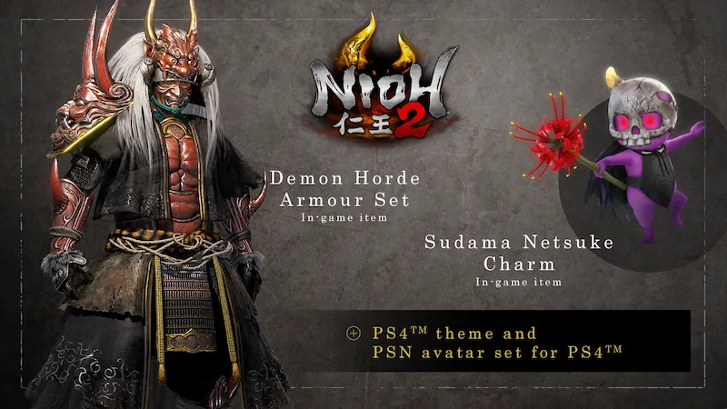
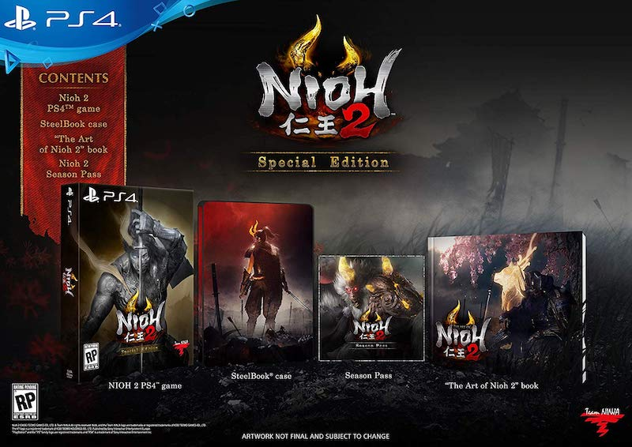

DLC / Niopedia

DLC u Nioh 2 obuhvaća sav sadržaj koji se može preuzeti za igru. Ova stranica s DLC-ovima za Nioh 2 navodi sve DLC-ove za prednarudžbu, besplatne i plaćene, kao i njihove datume izlaska i cijenu. Nioh 2 je sadržavao tri planirana plaćena DLC-a koja su objavljena 2020. godine i sva su uključena u sezonsku propusnicu. Nioh 2 sada nudi remasterirane verzije s raznim izdanjima kao što je Complete Edition koje uključuje sva tri DLC-a.
- Cijena prošle sezone: 24,99 USD, uključuje sva 3 plaćena DLC proširenja, što igračima daje uštedu od 5 USD u odnosu na pojedinačnu kupnju.
- Cijena svakog plaćenog DLC-a: 10 USD
Nioh 2 svi DLC-evi i verzije :)
Nioh 2 Remastered

Kako bi se poklopilo s izlaskom Nioh 2 na PC 5. veljače 2021., Nioh 2 Remaster je dostupan za Playstation 5 sustave. S bržim brojem sličica u sekundi, višim rezolucijama i ultra brzim vremenom učitavanja, Nioh 2 nikada nije izgledao ili se bolje ponašao na konzoli!
Ovaj remaster dostupan je u raznim opcijama:
- Nioh 2 Remastered: Complete Edition (PS4 & PS5) - Sadrži nadograđenu osnovnu igru zajedno s DLC paketima The Tengu's Disciple, Darkness in the Capital i The First Samurai.
- Nioh 2 Remastered (Upgrade Only) - Dostupno besplatno za igrače koji već posjeduju PS4 verziju Nioh 2.
- Nioh 2 Remastered (PS Plus) - Dostupno besplatno za igrače s najvišom razinom pretplate na Playstation Plus
- The Nioh Collection - Uključuje remasterirane verzije igara Nioh i Nioh 2, zajedno sa svim glavnim DLC-ovima za svaku igru.
*Napomena: Igrači koji već posjeduju PS4 verzije bilo kojeg Nioh 2 DLC paketa mogu besplatno preuzeti PS5 verzije.

The Tengu's Disciple
Release date: July 30th, 2020 na PS4
Cijena: €9.99
Nakon završetka kampanje u igri Nioh 2 – ponovno oslobodite svoju tamu i ugasite zaostale plamenove rata. Putujte u novu obalnu regiju Yashima i vratite se u prošlost, u posljednje godine razdoblja Heian. Tamo ćete upoznati nove saveznike, suočiti se sa zastrašujućim yokaijima i otkriti vezu između legendarnog Sohayamarua i Otakemarua.
Features:
- Nova regija: Yashima
- Nove misije i zadaci
- Novi neprijatelji i šefovi
- Nova oprema i oružje
- Nove sposobnosti i vještine

The Darkness in the Capital
Release date: October 15th, 2020 na PS4
Cijena: €9.99
Pripremite se ponovno osloboditi svoju tamu u drugom uzbudljivom proširenju za Nioh 2. Vratite se u prošlost u glavni grad Kyoto i udružite snage s legendarnim junacima, uključujući vodećeg japanskog ubojicu demona i najmoćnijeg Onmyo maga u povijesti. Zajedno sa svojim novim saveznicima suočite se s prijetnjom yokaija i otkrijte tajanstvenu vezu između daleke prošlosti i problematične sadašnjosti.
Features:
- Nova regija: Kyoto
- Nove misije i zadaci
- Novi neprijatelji i šefovi
- Nova oprema i oružje
- Nove sposobnosti i vještine

The First Samurai
Release date: December 17th, 2020 na PS4
Cijena: €9.99
Pripremite se za ultimativni izazov u vrhunskom, završnom poglavlju priče Nioh 2. Uzmite oružje i otputujte kroz vrijeme u zemlju legendarnog mladića koji je pobijedio onija. Ovdje će se otkriti Otakemaruova prošlost, tajna Sohayamarua i istina iza prvog samuraja. Kraj vašeg teško stečenog putovanja se bliži.
Features:
- Nova regija: Onigashima
- Nove misije i zadaci
- Novi neprijatelji i šefovi
- Nova oprema i oružje
- Nove sposobnosti i vještine
*Napomena: Za igrače s PS Plus verzijom Nioh 2 na Playstationu 5, slijedite sljedeće korake za dobivanje DLC-a:
- Kupite sezonsku propusnicu ili pojedinačne DLC-ove pod Dodacima za Playstation 4 izdanje igre Nioh 2.
- DLC-ovi bi sada trebali biti dostupni za preuzimanje pod Dodaci za Playstation 5 verziju Playstation PS verzije.
- Zatvori i ponovno pokreni igru
Pre-Order Features

- Demon Horde Armor Set
- Demon Horde Weapon Set
- Sudama Netsuke Charm
- PS4 Theme
- PSN Avatar Set
Special Edition Features

- Season Pass
- "The Art of Nioh 2" Artbook
- Steelbook case